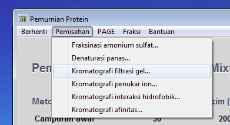
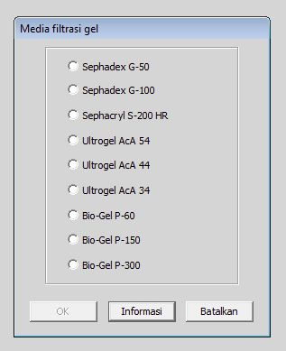
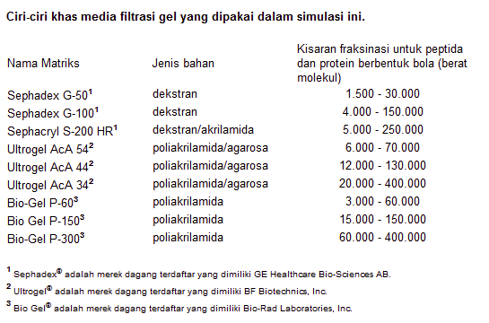
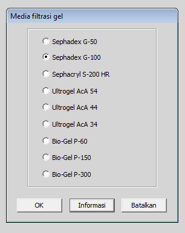

latihan sebelumnya
latihan berikutnya
latihan sebelumnya
latihan berikutnya Latihan 2 dari 6
Kromatografi Filtrasi Gel dengan Campuran yang Mengandung Tiga Protein
Pada saat ini, anda siap melaksanakan percobaan dengan campuran protein tersebut. Selain informasi tentang stabilitas enzim, anda belum mengetahui apa saja tentang campuran protein itu. Anda dapat memeriksa sampel dari campuran itu dengan elektroforesis gel poliakrilamida dua dimensi (2D-PAGE). Pertama-tama protein terpisah dengan elektroforesis pemfokusan isoelektrik (dimensi pertama) kemudian dengan elektroforesis dalam gel poliakrilamida yang mengandung SDS (dimensi kedua). Pada dimensi pertama protein-protein terpisah berdasarkan titik isoeletriknya (pI) dan dalam dimensi kedua berdasarkan berat molekul subunitnya. Kilik pada kata PAGE di baris abu-abu dan pilih 2-Dimensional PAGE. Anda seharusnya diperlihatkan gambar ini:

Seperti yang mungkin anda telah perkirakan, ada tiga noda sesuai dengan jumlah protein dalam campuran ini. Noda-noda itu diberi nomor pada gambar ini tetapi tidak pada simulasi yang sedang anda lakukan. Perhatikan pola noda-noda tersebut. Kira-kira berapa nilai pI dan berat molekul subunit masing-masing protein? Catat nilai-nilai ini karena anda akan membutuhkannya. Perhatikan bahwa besarnya tiap noda sama, artinya jumlah tiap protein dalam campuran itu kira-kira sama.
Sekarang klik pada kata PAGE di baris abu-abu dan pilih Sembunyikan gel agar anda bisa melanjutkan penelitian anda.

Cobalah memisahkan protein-protein ini dengan kromatografi filtrasi gel.
Klik pada kata Pemisahan di baris abu-abu dan pilih Filtrasi Gel ...

Sekarang anda harus memilih bahan (media) yang akan dipakai. Bagaimana cara anda memilihnya? Klik pada tombol Informasi. Informasi mengenai bahan kromatografi akan muncul dalam pop-up window. Gulir ke bawah sampai tabelnya.

Bahan-bahan tersedia mewakili produk dari tiga perusahaan yang berbeda. Perhatikan kisaran fraksinasinya. Untuk memperoleh pemisahan yang baik anda seharusnya memilih bahan dengan kisaran fraksinasi yang sedekat mungkin dengan kisaran berat molekul dalam campuran yang diteliti. Jangan lupa bahwa nilai dalam daftar ini adalah berat molekul asli sedangkan PAGE dalam SDS menunjukkan berat molekul subunitnya.

Tutup pop-up window itu dan memilih Sephadex G-100 dan klik pada tombol OK.
Hasil pemisahan campuran protein tersebut yang diperoleh dengan kolom berukuran tepat dan berisi bahan yang anda pilih (Sephadex G-100) akan terlihat. Fraksi-fraksi ditampung dan absorbsi tiap fraksi diukur pada panjang gelombang 280 nm. Apa yang menyebabkan absorbsi itu? Perhatikan profil elusi. Berapa puncak terdapat pada profil elusi? Apakah besarnya puncak itu sama? Lihat kembali berat molekul yang sudah anda catat untuk tiap protein. Periksalah protein-protein dalam tiap puncak dengan elektroforesis gel poliakrilamida dua dimensi (pakai pilihan PAGE di baris abu-abu itu). Protein apa saja yang terdapat pada masing-masing puncak dari tiga jenis protein yang tercampur pada campuran awal? Coba jelaskan hasil ini!

Coba anda peroleh pemisahan ketiga protein ini yang lebih baik dengan bahan kromatografi filtrasi gel yang berbeda.
Cara melakukan ini, klik pada kata Berhenti di baris abu-abu dan pilih Buang tahap ini dan lanjutkan.
Kemudian klik pada kata Pemisahan di baris abu-abu dan pilih Filtrasi Gel ...
Pilih bahan yang berbeda dan coba lagi.
Apakah pemurniannya lebih baik? Coba jelaskan hasil ini!
Sekarang coba metode yang berbeda. Kromatografi Penukar Ion.